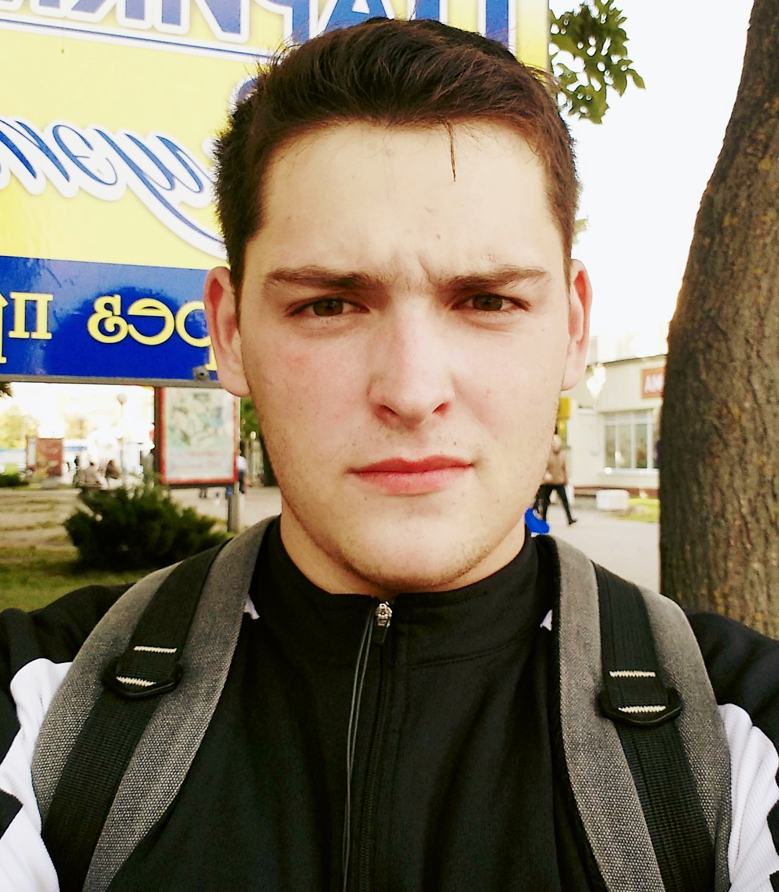

Voinilovich Anton
- Date of birth: 05.09.1996
- City: Brest
CONTACT DETAILS
Phone: +375 (33) 655-51-85
Email: anton.voinilovich@gmail.com
LinkedIn:anton-voinilovich
Instagramant_vojnilovich
Skype: Anton_Voinilovich
EDUCATION
Brest State Technical University
2014 — 2019
Specialty: Industrial and civil construction (civil engineer)
IT Academy
October 2020 - February 2021
JavaScript Web Application Development
EXPERIENCE
Freelance: implementation of course and diploma projects in technical disciplines
2016 – present
Direction:
- Architecture (development of project documentation, drawings in software packages AutoCAD (+ SPDS module), Archicad)
- Building structures (calculation and design of building structures, use of Lira complexes, RFEM)
OJSC "Lida repair and construction enterprise No. 17", Master of construction and installation works
August 2019 - October 2020
SP Voinilovich D.V., Master of construction and installation works
October 2020 - Present.
Implementation of the management of the production and economic activities of the site. Organization of work production in accordance with project documentation, building codes and regulations, specifications and other regulatory documents. Accounting for work performed, maintaining technical documentation, providing material, tools and construction machines. Interaction with the customer: acceptance of the terms of reference, adjustments in the course of work, delivery of completed work, signing of all accompanying documents (acceptance certificates, estimate documentation, etc.).
HARD SKILLS
- HTML5 and CSS3.
- Layout from PSD layout, adaptive layout, Flexbox, Grids, layout according to BEM methodology.
- Bootstrap 5.
- Basic knowledge of Adobe Photoshop, Figma.
- JavaScript.
- GitHub.
SOFT SKILLS
- Self-discipline and constant self-study, perseverance.
- Ability to independently find answers to questions.
- Teamwork, listening and listening skills.
- Ability to work with large amounts of information, stress resistance.
- English A1 + (I read, write, speaking is poorly developed).